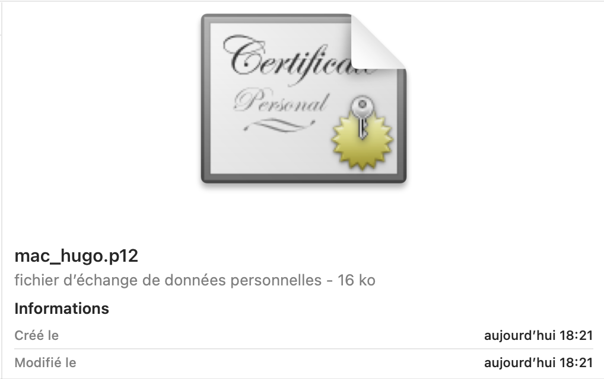
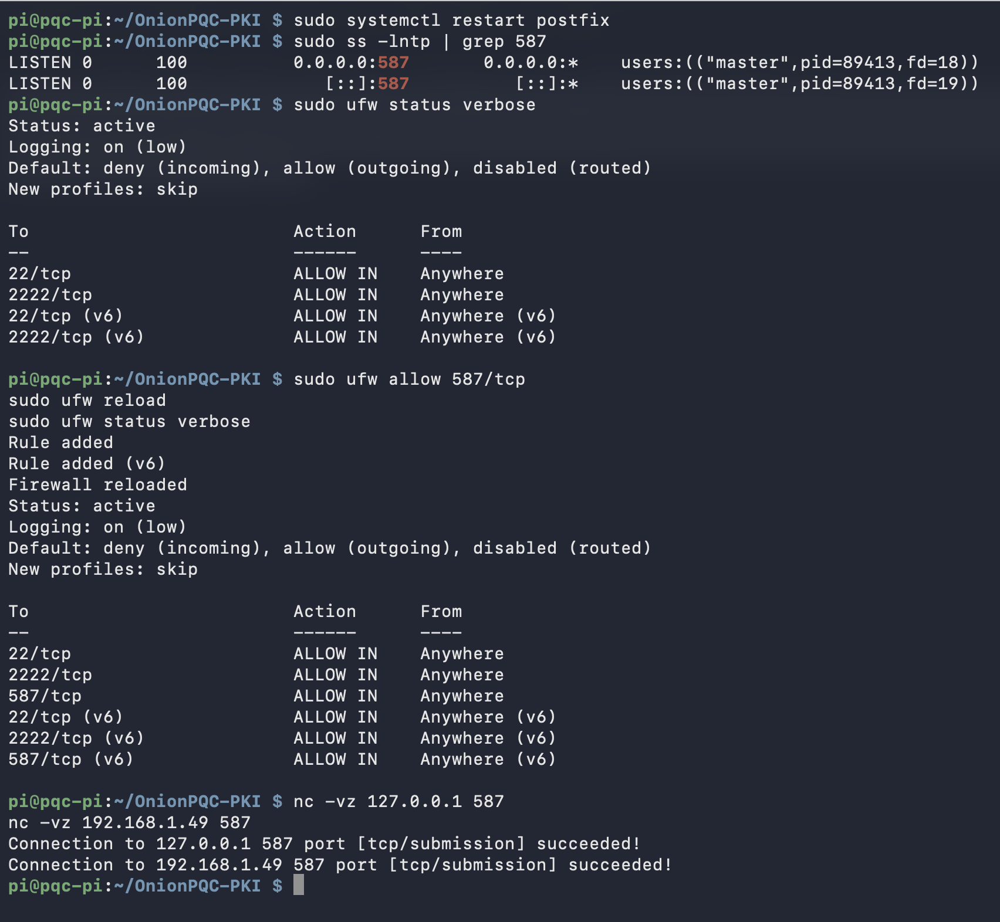

PQC-OnionPKI
PQC-OnionPKI ist ein angewandtes Engineering-Projekt rund um eine sehr konkrete Frage: Wie weit lässt sich heute eine Post-Quantum-Vertrauensinfrastruktur in eine reale Umgebung integrieren, ohne klassische Clients zu verändern? Dazu habe ich eine PKI auf einem Raspberry Pi aufgebaut, den Host gehärtet, Administrationszugriff über Tor ergänzt, eine vollständig post-quantenfähige X.509-Kette getestet und die Architektur anschließend an die realen Grenzen von macOS und Mail-Clients angepasst. Die operative Lösung behält daher eine klassische Vertrauensebene für die Interoperabilität bei und ergänzt ausgehende E-Mails um eine unabhängige ML-DSA-65-Signatur.
1. Warum dieses Projekt?
Die Verfügbarkeit von Post-Quantum-Algorithmen bedeutet nicht, dass sie sofort in bestehenden Systemen eingesetzt werden können. Eine PKI besteht nicht nur aus der Erzeugung eines Schlüsselpaars: Zertifikatsformate, Vertrauensketten, Clients, Betriebssysteme, Netzwerkprotokolle und etablierte Authentifizierungsmechanismen müssen zusammenspielen.
Das eigentliche Problem
Das Projekt soll daher weniger beweisen, dass „ML-DSA funktioniert“, sondern den Übergang von einer modernen kryptografischen Primitive zu einem nutzbaren Infrastrukturdienst untersuchen. E-Mail wurde bewusst als schwieriger Anwendungsfall gewählt: Nachrichten durchlaufen Relays, Anti-Spam-Richtlinien, Metadatentransformationen und Clients, die transportierte Informationen nicht immer sichtbar machen.
Ein experimenteller Ansatz
Die aufgetretenen Inkompatibilitäten werden nicht verborgen: Sie sind Teil des Ergebnisses. Wenn eine theoretisch korrekte Architektur von macOS oder einem klassischen Mail-Client nicht genutzt werden kann, besteht das Ziel darin, den Grund genau zu verstehen und anschließend die Architektur weiterzuentwickeln, ohne die gewünschte Sicherheitseigenschaft zu verlieren.
2. Architektur générale
Der Raspberry Pi dient als dedizierter Host für die PKI und die zugehörigen Dienste. Diese bewusste Trennung verhindert, dass nicht vertrauensrelevante Anwendungen auf derselben Plattform betrieben werden, und vereinfacht Härtung, Auditierung und die Abgrenzung des Sicherheitsbereichs.
Systemebene
- Raspberry Pi 4 unter Debian.
- Dediziertes und gehärtetes SSH mit Fernzugriff über einen Tor Onion Service.
- Netzwerkfilterung mit UFW auf Basis von nftables/iptables-nft.
- Fail2ban und System-Härtungsparameter.
- Verzeichnisse und Berechtigungen trennen kryptografische Geheimnisse von Anwendungskomponenten.
Kryptografische Ebene
- OpenSSL für klassische PKI-Operationen, CSRs, Zertifikate und TLS.
- liboqs / OpenSSL-OQS zum Testen von Post-Quantum-Algorithmen in X.509-nahen Workflows.
- ML-DSA-65 für Post-Quantum-Signaturen von Nachrichten.
- Zwei getrennte Vertrauensarchitekturen, um kryptografische Machbarkeit und operative Kompatibilität zu unterscheiden.
3. Die Zertifikatsentwicklung: von „Full PQC“ zu einer hybriden Architektur
Dies ist wahrscheinlich der wichtigste Teil des Projekts. Die ursprüngliche Idee war, das Experiment konsequent bis zum Ende zu führen: eine vollständig post-quantenfähige Zertifikatskette aufzubauen. Kryptografisch funktioniert das Experiment. Erst das umgebende Ökosystem erzwingt anschließend eine Anpassung.
Eine minimale Hierarchie aus Root CA → Mail CA → Anwendungszertifikaten wird mit Post-Quantum-Signaturen über OpenSSL-OQS/liboqs erzeugt. Schlüsselerzeugung, Zertifikatsausstellung und kryptografische Verifikation funktionieren.
Sobald die Zertifikate erzeugt sind, sollen sie auf einem klassischen Client genutzt werden. Genau hier wird die Grenze konkret: Der macOS-Schlüsselbund und die wichtigsten Mail-Clients können diese Post-Quantum-X.509-Kette nicht nativ verwenden. Ein Zertifikat kann kryptografisch gültig sein und dennoch für die Anwendung, die ihm vertrauen soll, unbrauchbar bleiben.
Anstatt eine nicht unterstützte Kette zu erzwingen, wird die Architektur in zwei Funktionen getrennt: Klassische Zertifikate bleiben für Interoperabilität und Authentifizierung im bestehenden Ökosystem zuständig, während die Post-Quantum-Signatur zu einem unabhängigen Nachweis wird, der direkt auf die Nachricht angewendet wird.
Ein kompatibles Client-Zertifikat wird in einen persönlichen PKCS#12-Container exportiert und anschließend in macOS importiert. Die vertrauenswürdige CA wird im Schlüsselbund installiert, damit der Client die Kette korrekt aufbauen kann. Dadurch bleibt eine standardmäßige Benutzererfahrung für die SMTP-Konfiguration erhalten.
Die „Full-PQC“-PKI bleibt ein Forschungsartefakt, das die kryptografische Machbarkeit demonstriert. Operativ wird die hybride Variante genutzt: klassische Zertifikate dort, wo Clients sie erzwingen, und ML-DSA-65 dort, wo eine Post-Quantum-Eigenschaft hinzugefügt werden kann, ohne die Interoperabilität zu brechen.



4. Post-Quantum-Signaturen für E-Mails ohne Client-Anpassung
Nachdem das Problem der Zertifikatskompatibilität isoliert wurde, konzentriert sich das Projekt auf die eigentlich gesuchte Eigenschaft: einen Post-Quantum-Nachweis für Integrität und Authentizität der Nachricht bereitzustellen. Die Integration erfolgt auf Ebene des Postfix-Relays, sodass der Mail-Client keine spezifische PQC-Logik implementieren muss.
Warum Kanonisierung?
Eine E-Mail kann zwischen Versand und Verarbeitung unterschiedliche Darstellungen annehmen. Damit eine Signatur reproduzierbar geprüft werden kann, definiert das System daher eine deterministische Darstellung der abgedeckten Elemente. Derselbe Inhalt muss zum selben Verifikations-Payload führen.
Postfix-Integration
Das Signaturskript ist als Content-Filter in die Postfix-Pipeline integriert und läuft unter einem nicht privilegierten Benutzer. Die Kryptografie wird bewusst in die Infrastruktur verlagert, statt Apple Mail, Gmail oder Outlook ein Plugin oder eine Änderung aufzuzwingen.
Diese Messungen auf dem Raspberry Pi 4 zeigen, dass die Signaturkosten im Rahmen dieses Prototyps nicht das größte operative Hindernis darstellen. Die wesentlicheren Schwierigkeiten entstehen bei der Integration in die Formate und Verhaltensweisen bestehender Clients.

5. Härtung des Hosts, der die Vertrauensfunktion trägt
Eine PKI auf einem Raspberry Pi zu betreiben reicht nicht aus: Das System, das die Schlüssel enthält und kryptografische Operationen ausführt, wird selbst Teil der Vertrauenskette. Das Projekt umfasst daher Maßnahmen zur Reduzierung der Angriffsfläche und zur Zugriffskontrolle.
SSH-Zugriff
Die Administration erfolgt über SSH mit dedizierter Konfiguration und Client-Schlüsseln. Fernzugriff ist zusätzlich über einen Tor Onion Service möglich, sodass keine Administrationsschnittstelle direkt über eine öffentliche IP exponiert werden muss.
Netzwerkfilterung
UFW dient als Verwaltungsschicht für die Netzwerkfilterung und kontrolliert die für den Betrieb notwendigen Ports. Tatsächlich lauschende Dienste werden überprüft, um den exponierten Bereich zu begrenzen.
Defense in Depth
Fail2ban, System-Härtungsparameter, Berechtigungstrennung, Log-Inspektion und Service-Review ergänzen den Schutz. Das Projekt erhebt jedoch nicht den Anspruch, die Garantien eines zertifizierten HSM nachzubilden.

6. Was die Tests mit Mail-Clients gezeigt haben
Nachdem serverseitig eine korrekte Signatur erzeugt wurde, tritt eine zweite Schwierigkeit auf: Ein in einer E-Mail transportierter Nachweis ist nur dann nützlich, wenn er die Zustellkette überlebt und anschließend wiedergefunden oder verifiziert werden kann.
Benutzerdefinierte Header sind keine zuverlässige Schnittstelle
Metadaten vom Typ X-PQC-* können serverseitig korrekt eingefügt werden, aber unsichtbar werden,
normalisiert oder von Gmail, Apple Mail oder Outlook nicht angezeigt werden. Kryptografische Korrektheit
auf Relay-Ebene garantiert daher keine Sichtbarkeit für den Benutzer.
Die Architektur muss sich an das reale System anpassen
Diese Beobachtung führt zur Unterscheidung zwischen technisch transportiertem Nachweis und dem Nachweis, der dem Benutzer tatsächlich angezeigt wird. Der Wechsel von einem Header-zentrierten Ansatz zu einem im Inhalt sichtbar darstellbaren Nachweis ist eine direkte Folge der Integrationstests.
Dies ist eine der interessantesten Erkenntnisse des Projekts: Ein Mechanismus kann auf Ebene der Primitive gültig, serverseitig korrekt ausgeführt und dennoch als wirklich nutzbare Funktion scheitern, weil ein Protokoll- oder Client-Verhalten dazwischen eingreift.
7. Was ich aus diesem Projekt gelernt habe
PQC-Migration ist ein Systemproblem
Der Algorithmus ist nur ein Teil des Themas. Zertifikate, Trust Stores, Clients, Protokolle und Deployment-Prozesse bestimmen häufig, was tatsächlich möglich ist.
Eine hybride Architektur kann realistischer sein
Die Koexistenz klassischer und post-quantenfähiger Komponenten ermöglicht es, Legacy-Abhängigkeiten dort beizubehalten, wo sie noch notwendig sind, und gleichzeitig schrittweise neue kryptografische Garantien einzuführen.
Integrationsfehler sind nützlich
Ein abgelehntes Zertifikat oder ein verschwundener Header sind nicht nur Fehler, die umgangen werden müssen: Sie liefern direkte Hinweise auf die Reife des Ökosystems und beeinflussen die Zielarchitektur.
Der vollständige technische Bericht dokumentiert das Projekt reproduzierbar: Host-Installation, Härtung, Tor-Konfiguration, OpenSSL-/liboqs-Umgebung, PKI-Architekturen, Signaturtests, Postfix-Integration und beobachtetes Verhalten der Mail-Clients.
Vollständigen technischen Bericht öffnen